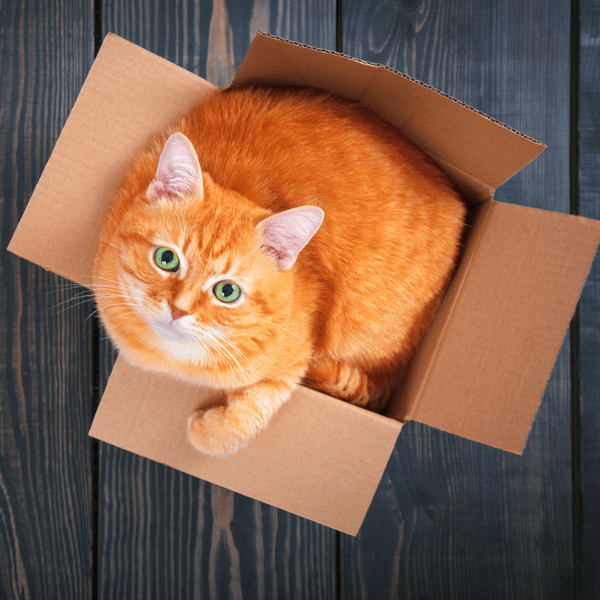

Это рыжий кот в коробке, он очень доволен.
Меня, как и вас, наверняка интересует вопрос: "Как этот котик забрался в коробку?" Но думаю ответ не важен потому что котик...
- красивый
- милый
- рыжий
правда ведь?
Если вы до сих пор не убедились, что котики - это чудо, то посмотрите на них своими глазами!